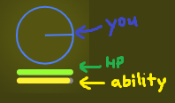

This is a multiplayer shooty game!
The goal of this game is to survive and gain points.
This is you. You can move around.
Shoot and hit other players to get points.
If you get hit, your health will decrease. If your health decreases until zero, :(.
Every 120 seconds, a networking MCQ will pop up on your screen.
Now you cannot shoot, but you can still move slowly.
Answer the question correctly to restore yourself back to normal and also gain some points!
To prevent random guessing, if you select a wrong option, there is a 5 second timeout.
To be fair, the same question will appear on everyone's screen at the same time.
| A or ← | move left |
| W or ↑ | move up |
| D or → | move right |
| S or ↓ | move down |
| move the mouse around | aim |
| ␣ space or left click | shoot |
| ⇧ shift or right click | use ability |
| ⏎ enter | enter chat mode |
| ⛝ esc | exit chat mode |
| 1 2 3 4 5 6 7 8 9 | select option |
| P | quit game |
You only start healing if you have not been hit for the last 5 seconds. (important!)
There is a large ball that bounces around. It does nothing much, but if you are near the ball, others can see you!
Your blue bullets are collidable with other people's red bullets.
You can move in 8 directions!
Every type of shooter is different, try them out!
If the game is too dark, increase the screen brightness...
Always shoot around randomly even if you see no one around so that you can obtain more map visibility using your bullets.
If you answer/guess a question very fast, start chasing people who have not answered the question yet!
I wonder how many people will read this until the end?
The heal ability is a bit too good.
To close this page and play the game, click here ❌!
For the actual report, click here 📝!